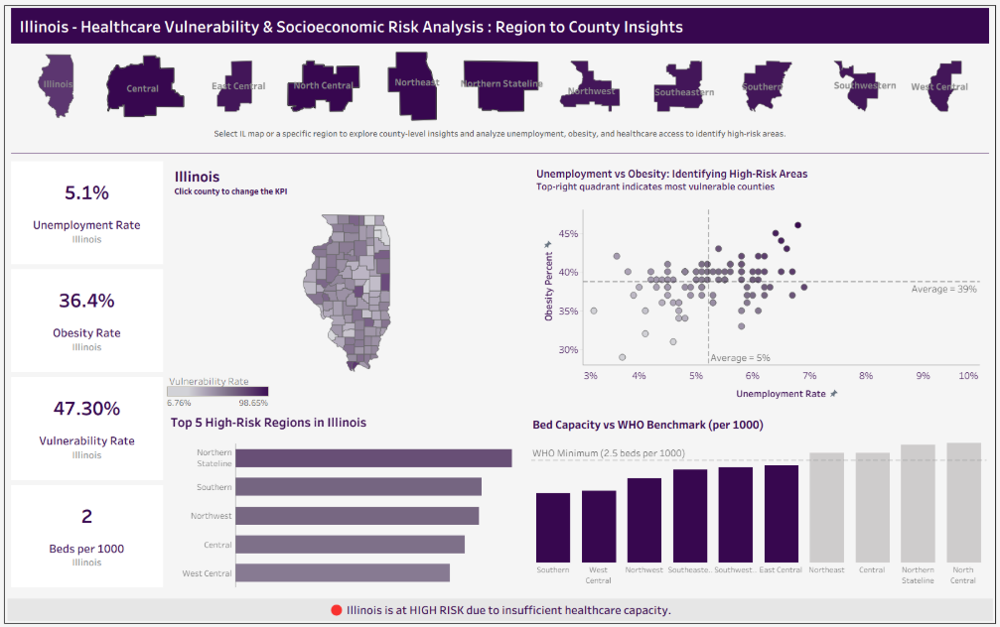

Healthcare Analytics · Tableau
Healthcare Vulnerability & Socioeconomic Risk Analysis
Built an interactive Tableau analysis examining healthcare capacity and socioeconomic vulnerability across Illinois. Combined hospital capacity and socioeconomic indicators and designed State → Region → County drill-down analysis.
Focus:
Hospital capacity · socioeconomic risk · geographic analysis
Tableau
LOD
Parameters
Set Actions
Data Visualization
View Project ↗